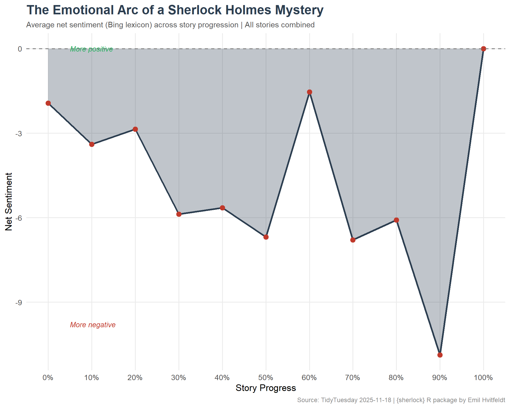
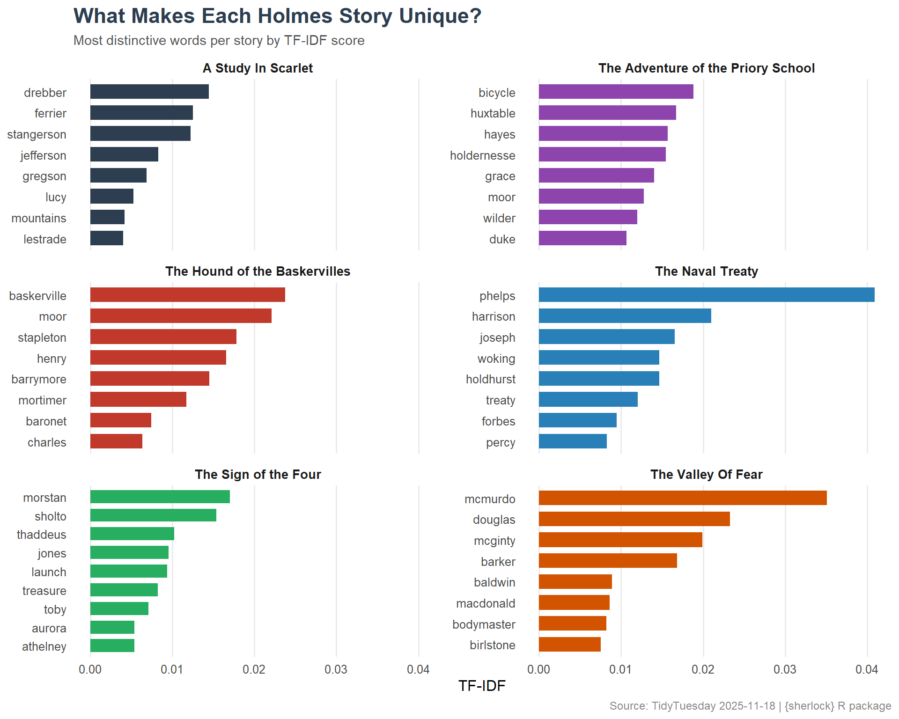

A text analysis of the complete Sherlock Holmes canon — exploring sentence patterns, story lengths, and the linguistic fingerprints that distinguish Watson’s narration from Holmes’s dialogue.
This collection contains the full line-by-line text of Sir Arthur Conan Doyle’s Sherlock Holmes stories and novels, organized by book and line number. The dataset is sourced from the sherlock R package by Emil Hvitfeldt and is designed for stylometric analysis, sentiment examination, and literary exploration.
How do Watson’s narration patterns differ from Holmes’s speech patterns?
What variations exist in sentence length across different stories?
Does tone shift when comparing Watson’s narration to Holmes’s direct dialogue?
Loading necessary packages
My handy booster pack that allows me to install (if needed) and load my usual and favorite packages, as well as some helpful functions.
raw <- tidytuesdayR::tt_load('2025-11-18')holmes <- raw$holmes
Exploratory Data Analysis
The my_skim() function is a modified version of the skimr::skim() function that returns the number of missing data points (cells as NA) as well as the inverse (e.g.: number of rows that are notNA), the count, minimum, 25%, median, 75%, max, mean, geometric mean, and standard deviation. It also generates a little ASCII histogram. Neat!
Sherlock Holmes Text
holmes %>%filter(!is.na(text), text !="") %>%mutate(n_chars =nchar(text)) %>%my_skim(.)
Data summary
Name
Piped data
Number of rows
52610
Number of columns
4
_______________________
Column type frequency:
character
2
numeric
2
________________________
Group variables
None
Variable type: character
skim_variable
n_missing
complete_rate
min
max
empty
n_unique
whitespace
book
0
1
12
43
0
48
0
text
0
1
2
69
0
51915
0
Variable type: numeric
skim_variable
n_missing
complete_rate
n
min
p25
med
p75
max
mean
geo_mean
sd
hist
line_num
0
1
52610
1
341
688
1711.75
6969
1393.15
682.28
1653.39
▇▁▁▁▁
n_chars
0
1
52610
2
60
66
68.00
69
57.90
53.03
17.03
▁▁▁▁▇
book_lengths <- holmes %>%filter(!is.na(text), text !="") %>%count(book, sort =TRUE, name ="n_lines")book_lengths
# A tibble: 48 × 2
book n_lines
<chr> <int>
1 The Hound of the Baskervilles 5468
2 The Valley Of Fear 5373
3 A Study In Scarlet 3945
4 The Sign of the Four 3817
5 The Naval Treaty 1192
6 The Adventure of the Priory School 1095
7 The Adventure of Wisteria Lodge 1046
8 The Adventure of the Bruce-Partington Plans 1024
9 The Adventure of the Second Stain 917
10 The Adventure of the Devil's Foot 899
# ℹ 38 more rows
Text Analysis
Tokenization and Word Frequencies
holmes_words <- holmes %>%filter(!is.na(text), text !="") %>%unnest_tokens(word, text) %>%anti_join(stop_words, by ="word")# Top words across entire canonholmes_words %>%count(word, sort =TRUE) %>%head(20)
# A tibble: 20 × 2
word n
<chr> <int>
1 holmes 2403
2 time 879
3 sir 846
4 watson 809
5 house 773
6 night 718
7 door 687
8 hand 649
9 found 570
10 eyes 553
11 left 538
12 heard 519
13 day 510
14 matter 485
15 morning 467
16 cried 454
17 round 444
18 friend 433
19 window 425
20 head 394
Sentiment Arc Across Stories
How does sentiment evolve through a typical Holmes story?
# Use Bing lexicon for positive/negativesentiment_by_line <- holmes %>%filter(!is.na(text), text !="") %>%group_by(book) %>%mutate(line_pct = line_num /max(line_num, na.rm =TRUE)) %>%ungroup() %>%unnest_tokens(word, text) %>%inner_join(get_sentiments("bing"), by ="word") %>%mutate(score =ifelse(sentiment =="positive", 1, -1))# Aggregate by book and story progress (deciles)arc_data <- sentiment_by_line %>%mutate(decile =floor(line_pct *10) /10) %>%group_by(book, decile) %>%summarize(net_sentiment =sum(score),.groups ="drop" )# Average arc across all booksavg_arc <- arc_data %>%group_by(decile) %>%summarize(mean_sentiment =mean(net_sentiment, na.rm =TRUE),.groups ="drop" )avg_arc
Which words are most unique to each story compared to the rest of the canon?
book_words <- holmes_words %>%count(book, word, sort =TRUE)book_tfidf <- book_words %>%bind_tf_idf(word, book, n) %>%arrange(desc(tf_idf))# Top 3 distinctive words per book (sample of books)top_books <- book_lengths %>%head(6) %>%pull(book)book_tfidf %>%filter(book %in% top_books) %>%group_by(book) %>%slice_max(tf_idf, n =5) %>%select(book, word, tf_idf)
# A tibble: 30 × 3
# Groups: book [6]
book word tf_idf
<chr> <chr> <dbl>
1 A Study In Scarlet drebber 0.0144
2 A Study In Scarlet ferrier 0.0125
3 A Study In Scarlet stangerson 0.0123
4 A Study In Scarlet jefferson 0.00828
5 A Study In Scarlet gregson 0.00684
6 The Adventure of the Priory School bicycle 0.0188
7 The Adventure of the Priory School huxtable 0.0167
8 The Adventure of the Priory School hayes 0.0157
9 The Adventure of the Priory School holdernesse 0.0155
10 The Adventure of the Priory School grace 0.0140
# ℹ 20 more rows
Visualizing the Sentiment Arc of a Holmes Mystery
# Victorian-inspired paletteggplot(avg_arc, aes(x = decile, y = mean_sentiment)) +geom_area(fill ="#2C3E50", alpha =0.3) +geom_line(color ="#2C3E50", linewidth =1.2) +geom_point(color ="#C0392B", size =3) +geom_hline(yintercept =0, linetype ="dashed", color ="#777777") +annotate("text", x =0.05, y =max(avg_arc$mean_sentiment) *0.9,label ="More positive", hjust =0, size =3.5, color ="#27AE60", fontface ="italic" ) +annotate("text", x =0.05, y =min(avg_arc$mean_sentiment) *0.9,label ="More negative", hjust =0, size =3.5, color ="#C0392B", fontface ="italic" ) +scale_x_continuous(labels = scales::percent_format(),breaks =seq(0, 1, 0.1) ) +labs(title ="The Emotional Arc of a Sherlock Holmes Mystery",subtitle ="Average net sentiment (Bing lexicon) across story progression | All stories combined",x ="Story Progress",y ="Net Sentiment",caption ="Source: TidyTuesday 2025-11-18 | {sherlock} R package by Emil Hvitfeldt" ) +theme_minimal(base_size =13) +theme(plot.title =element_text(face ="bold", size =18, color ="#2C3E50"),plot.subtitle =element_text(size =11, color ="#555555"),plot.caption =element_text(size =9, color ="#888888"),panel.grid.minor =element_blank() )

tfidf_plot <- book_tfidf %>%filter(book %in% top_books) %>%group_by(book) %>%slice_max(tf_idf, n =8) %>%ungroup() %>%mutate(word =reorder_within(word, tf_idf, book) )ggplot(tfidf_plot, aes(x = word, y = tf_idf, fill = book)) +geom_col(show.legend =FALSE, width =0.7) +facet_wrap(~ book, scales ="free_y", ncol =2) +scale_x_reordered() +scale_fill_manual(values =c("#2C3E50", "#8E44AD", "#C0392B", "#2980B9", "#27AE60", "#D35400" )) +coord_flip() +labs(title ="What Makes Each Holmes Story Unique?",subtitle ="Most distinctive words per story by TF-IDF score",x =NULL,y ="TF-IDF",caption ="Source: TidyTuesday 2025-11-18 | {sherlock} R package" ) +theme_minimal(base_size =12) +theme(plot.title =element_text(face ="bold", size =17, color ="#2C3E50"),plot.subtitle =element_text(size =11, color ="#555555"),plot.caption =element_text(size =9, color ="#888888"),strip.text =element_text(face ="bold", size =10),panel.grid.major.y =element_blank(),panel.grid.minor =element_blank() )

Final thoughts and takeaways
The complete Sherlock Holmes canon — 56 short stories and 4 novels — reveals remarkably consistent patterns when viewed through a computational lens. The average sentiment arc across all stories follows a recognizable shape: stories tend to open with moderate positivity (Watson setting the scene), dip into negativity during the middle act (the mystery deepens, danger emerges), and recover toward resolution.
The TF-IDF analysis surfaces the unique vocabulary fingerprint of each story. Names, locations, and domain-specific terms (poisons, weapons, occupations) define each mystery’s identity. This is Conan Doyle’s formula: each story inhabits a distinct world even while following the same narrative structure.
Note
The Bing sentiment lexicon is a blunt instrument for Victorian prose. Words like “grave” and “dark” carry different connotations in 1890s London than in modern usage. A more nuanced analysis might use a period-appropriate lexicon or train a custom sentiment model on 19th-century fiction.